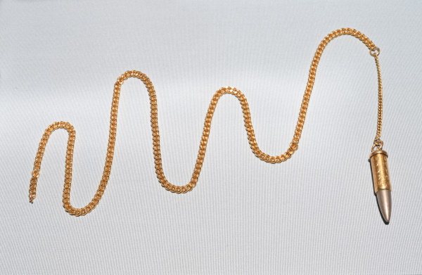
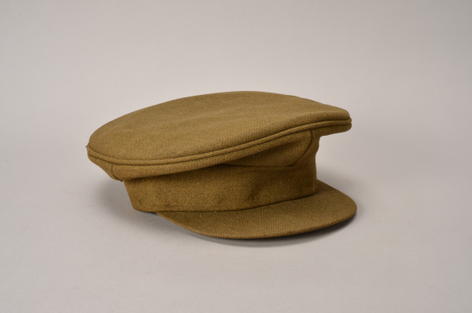
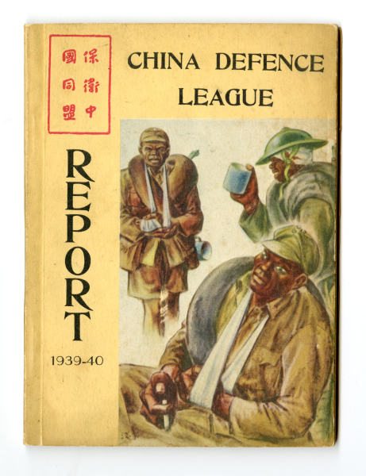

了解香港發展歷史，學習正確歷史知識（8號館主題）
本問答題庫圍繞8號展廳展品與香港抗戰歷史設置考題，觀看影片後完成測驗，加深對日軍侵華、香港援華通道歷史的認識。
香港抗戰及海防博物館 8 號展廳的主題為《日軍侵華・攜手抗敵》，主要講述 1931年至1941年香港淪陷前夕的抗戰支援歷史。目的是讓參觀者加深對香港抗戰過程的認知，深入瞭解戰前香港作為重要國際樞紐全力支援內地抗日的史實；通過館藏文物了解香港民眾、愛國團體與中外志願人員的救國行動；感受香港與內地唇亡齒寒共同抗敵的處境；培養銘記歷史、珍惜和平、熱愛家國的良好情懷。

▲ 民間自製子彈墜飾項鏈

▲ 偉林裁縫及製帽店生產英軍制式軍帽
首先，我們進入愛國展區，映入眼簾的這個子彈墜飾是1941年陳策戰士被日軍擊傷手部後突圍至惠州後取出的，之後造成墜飾作為紀念，後來贈給展館進行展示。另一展品是由本地工廠生產的英軍制式軍帽，證明戰前香港輕工業積極配合本地防務建設，為駐港部隊提供物資支援，展現當時香港社會全民備戰、共同抗敵的精神。

▲ 1939至1940年度《保衛中國同盟年報》英文版（複製品）
接著， 我們參觀援華物資與情報戰線展區， 展廳中的《保衛中國同盟年報》複刻資料詳細記錄香港接收海外捐款及物資，並源源不斷輸送到內地抗日戰場的過程，體現出香港無可替代的援華樞紐地位。此外，傳信木螺栓和日軍陣地偵察地圖還原了英軍服務團情報人員冒險搜集軍情，秘密協助抗日工作的隱蔽事蹟， 讓我們看見地方民間力量的參與和支持。
最後， 本展廳還陳列著1947年西貢鄉民抗日表彰檔案、南海艦隊標識木牌與1997年駐港部隊進駐紀念封等專屬實物展品。這批文物不再聚焦戰前支援與情報工作，而是完整記錄香港鄉民自發抗日，戰後獲得嘉獎的光榮事蹟。同時通過新舊館藏實物對照，清晰展現香港從戰亂備戰、全民救國到回歸後安穩守護的歷史轉變。 整個展廳文物層層遞進，全面印證抗戰時期香港各界不分階層 共同抗敵，讓我們深刻體會香港全民抗戰的精神，更懂得今日和平來之不易。
建議先觀看中文影片，認識8號館完整展覽脈絡
English version introduction video of Exhibition Hall 8